05 · Prensa
Lo que se ha escrito
Recortes digitalizados del archivo familiar, de 1986 a 2025, junto a los enlaces públicos disponibles. Pulsa cualquier recorte para abrirlo a tamaño completo.
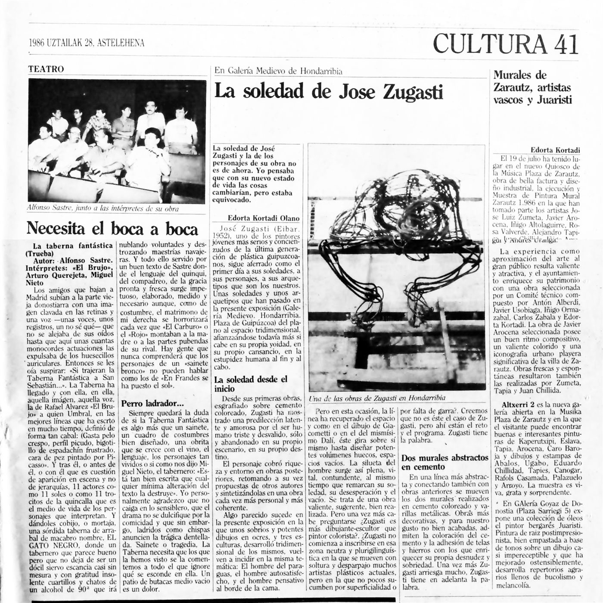
Archivo familiar · 1986 Crítica de Edorta Kortadi Recorte digitalizado del archivo de prensa histórico.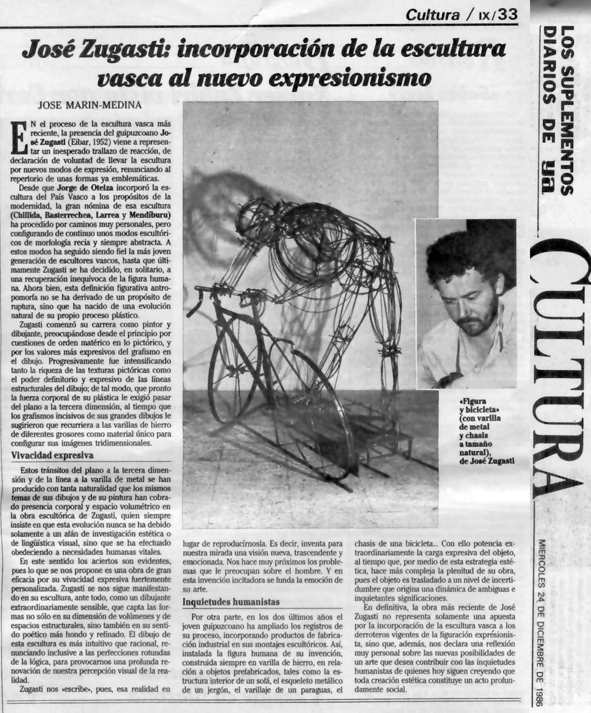
Diario YA · 1986 Mención en prensa nacional Publicación sobre su trabajo durante su etapa de consolidación.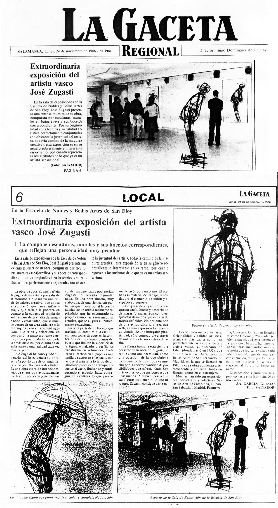
GAC · 1986 Artículo sobre obra y proceso Recorte histórico digitalizado del archivo familiar.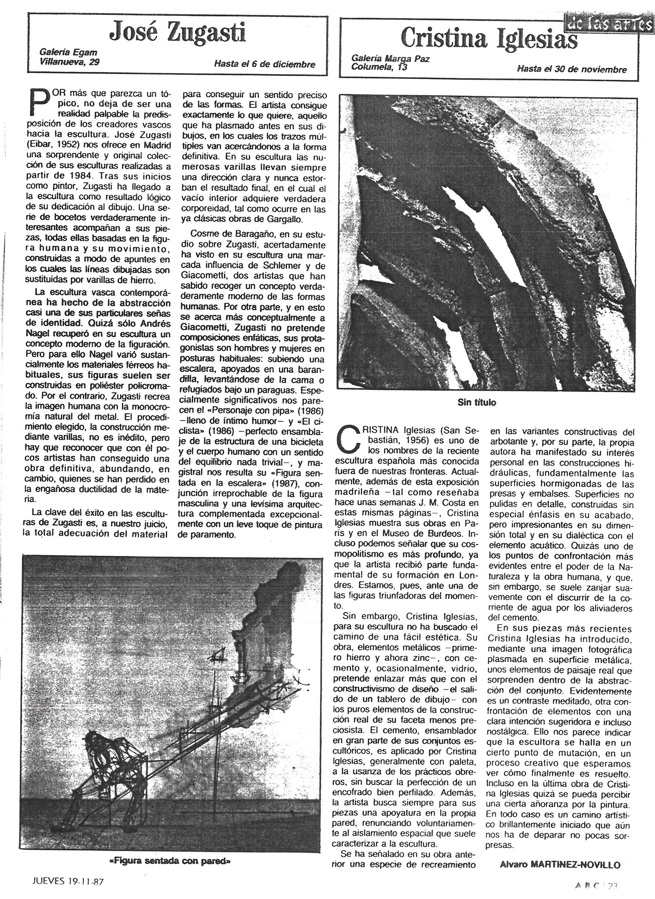
Galería Egam · 1987 Reseña de la individual de Madrid Cobertura de la exposición en la Galería Egam, noviembre de 1987.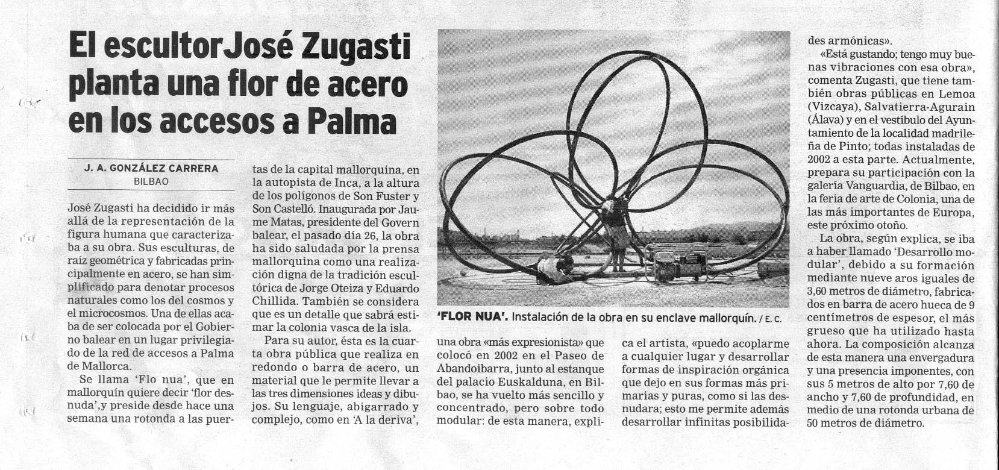
El Día · 2005 Cobertura de trayectoria escultórica Recorte del periodo de madurez de su obra en metal y alambre. El Diario Vasco · 2021 Artículo sobre «El ciclista» Noticia centrada en una de sus piezas de obra pública.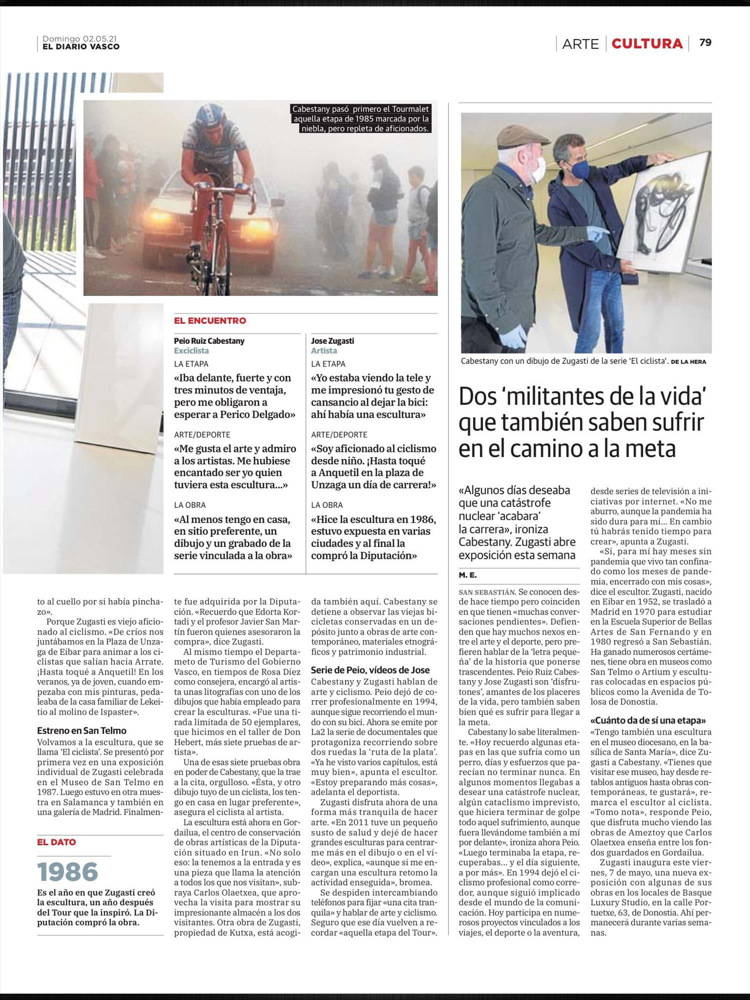
El Diario Vasco · 2021 «El ciclista» · continuación Segunda página del mismo reportaje.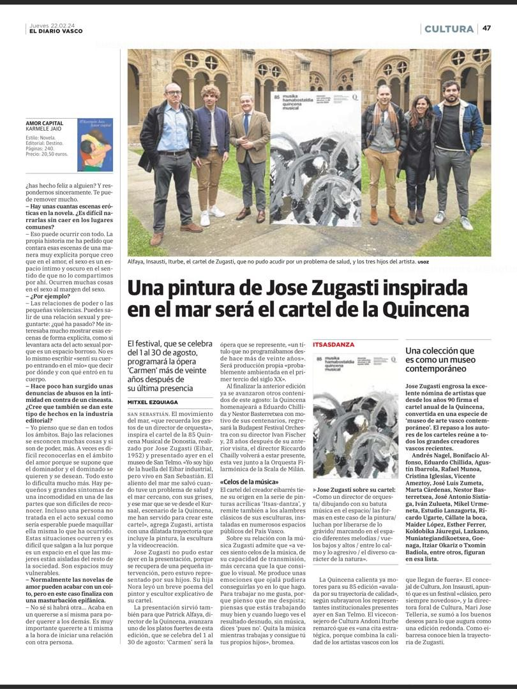
Prensa local · 22 febrero 2024 Presentación del cartel de la Quincena Crónica del acto celebrado en el claustro del Museo San Telmo.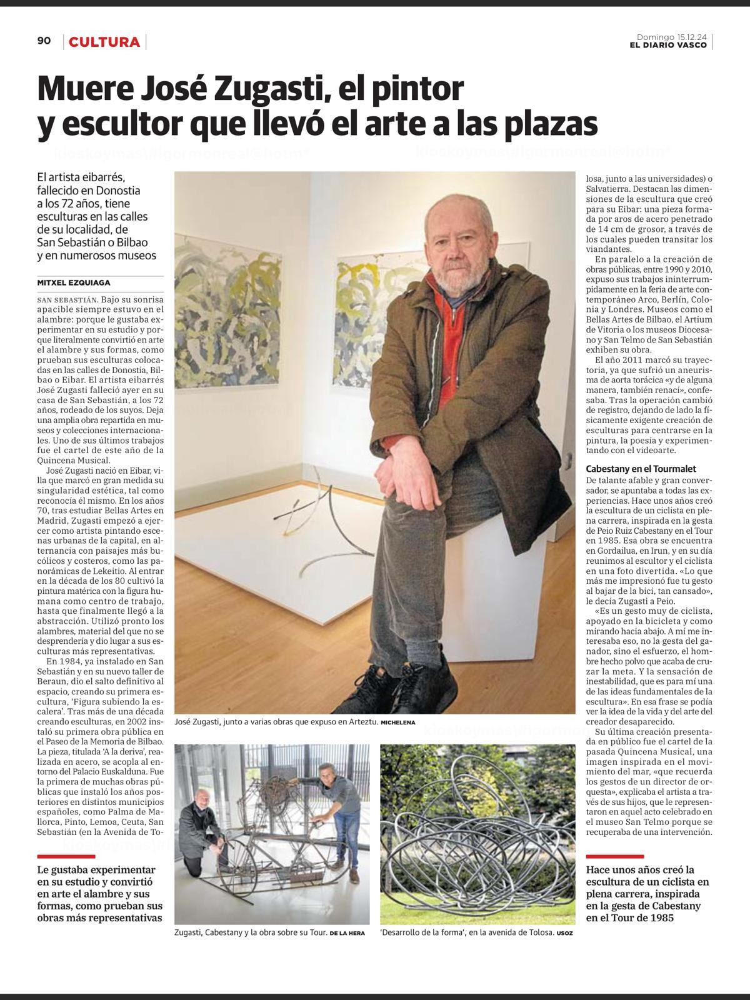
Prensa · 15 diciembre 2024 Fallece el escultor eibarrés Primera cobertura tras su muerte en Donostia-San Sebastián.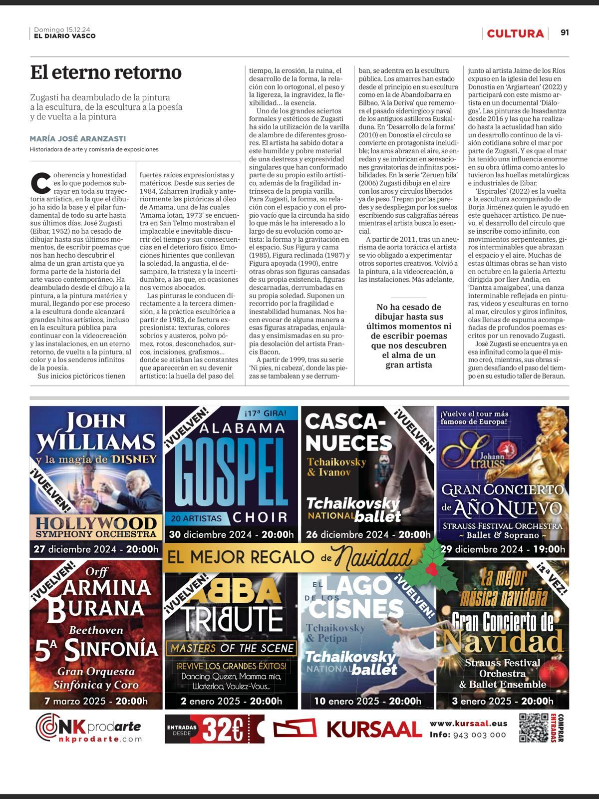
Prensa · 15 diciembre 2024 Necrológicas y semblanzas Recorte complementario del mismo día.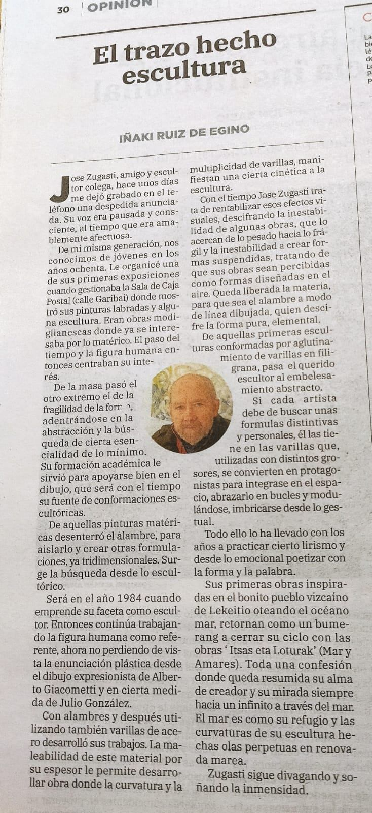
Prensa · 17 diciembre 2024 Despedidas y homenajes Reacciones del mundo cultural vasco a su fallecimiento.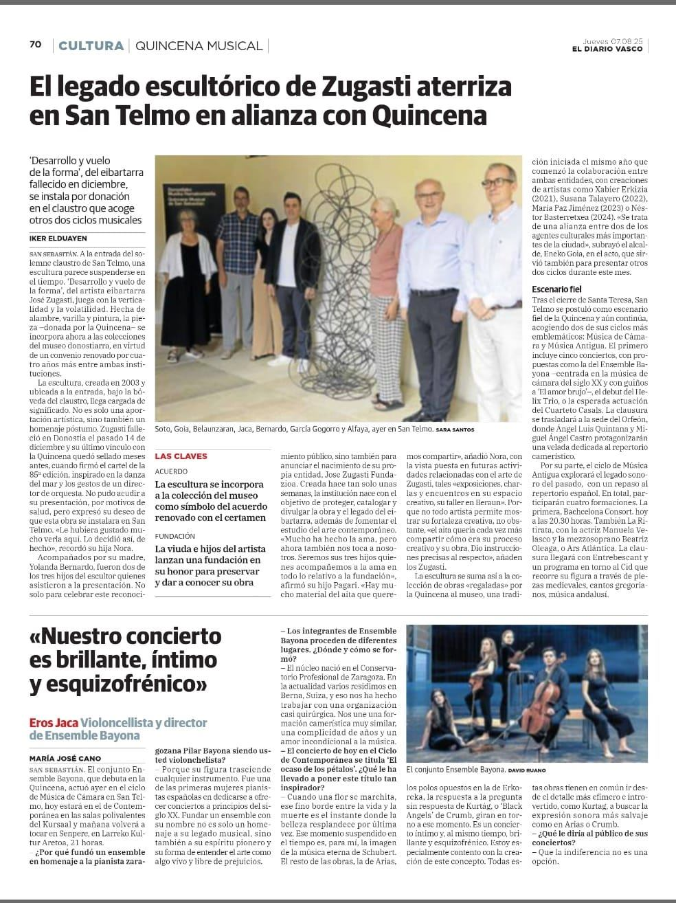
El Diario Vasco · 7 agosto 2025 «Desarrollo de la forma» en la Quincena Su obra en el Museo, dentro de la programación de la Quincena Musical. Aunamendi Entziklopedia Entrada biográfica Ficha enciclopédica de su vida y obra. Eibar.eus · 2024 Nota sobre su fallecimiento El Ayuntamiento de Eibar despide al escultor. Quincena Musical · 2024 Cartel de la 85 edición Su último encargo público.Pendiente de localizar en el archivo: la crítica de Wiesbaden (1985) y el texto de J. Ant. García Marcos (1985), cuyos accesos directos del archivo original están rotos.